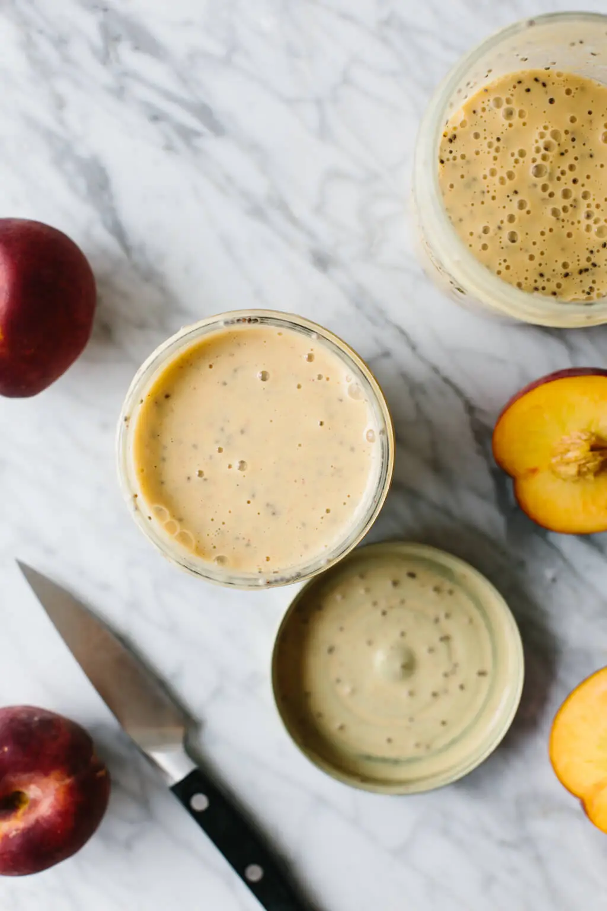

Peach Smoothie

Peach smoothie makes for a delicious and nutritious breakfast smoothie as its blended with fresh peaches, yogurt, chia seeds and a few spices. With just a few ingredients and a high-powered blender, you’ll have a healthy breakfast smoothie in minutes.
Ingredients
- 3 peaches, pitted and quartered
- 1/2 cup milk, diary or dairy-free
- 1 1/2 cup yogurt, diary or dairy-free
- 1 tsp vanilla extract
- sprinkle of cinnamon
- sprinkle of ground ginger
- 2 tbsp chia seeds, divided
Optional
- honey or maple syrup to sweeten
- collagen powder
Steps
- Add all ingredients except the chia seeds to a high-powered blender. Blend on high until smooth and creamy.
- Divide the peach smoothie between two Le Parfait jars or Mason jars. Add one tablespoon of chia seeds, add the lid and shake until well combined.